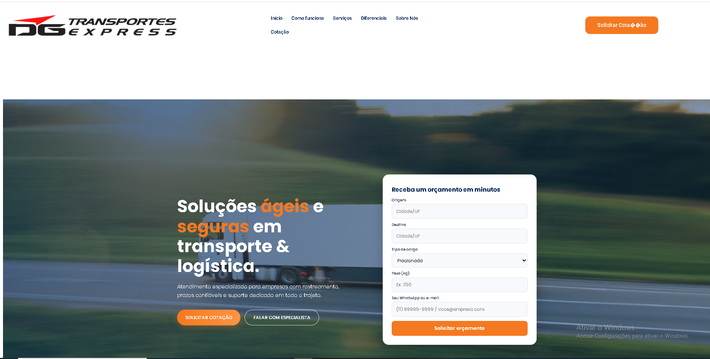
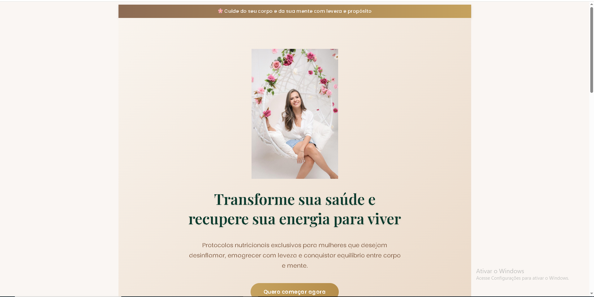

Operação Apocalipse Zumbi
Landing page cinematográfica para evento de airsoft, com contagem regressiva e inscrição.
Ver Projeto
Mercantil Johanssen
Catálogo digital de produtos e marcas parceiras, com layout leve e profissional.
Ver Projeto
Barbearia Leo Cortes
Site moderno e responsivo com agendamento online via WhatsApp e foco em estilo.
Ver Projeto

DG Transportes Express
Landing page profissional de logística, com design forte e seções de serviços personalizadas.
Ver Projeto
Daufen Negócios Imobiliários
Site institucional com foco em imóveis premium, integração com formulários e mapa de localização.
Ver ProjetoArquitetura Mix
Portfólio de arquitetura e interiores com design minimalista e foco nas imagens dos projetos.
Ver Projeto

Nutricionista Denise Lopes
Landing page feminina e leve, com foco na venda de e-books e agendamentos online.
Ver ProjetoS.O.S Edinho
Site de serviços elétricos e ar-condicionado com layout direto, moderno e CTA estratégico.
Ver Projeto